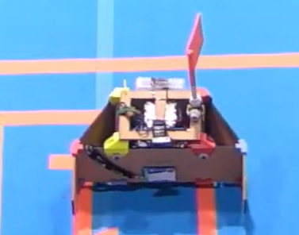
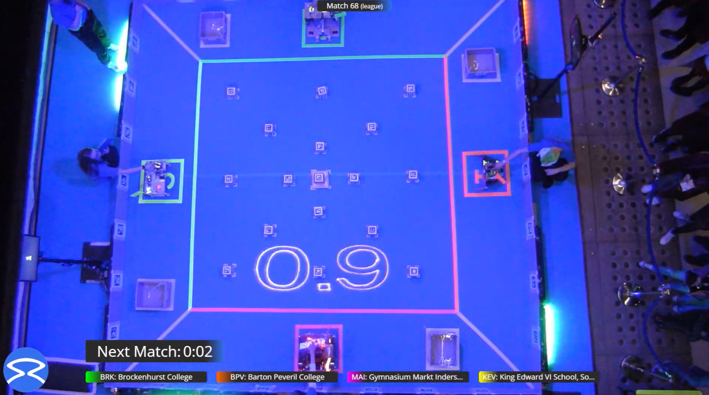
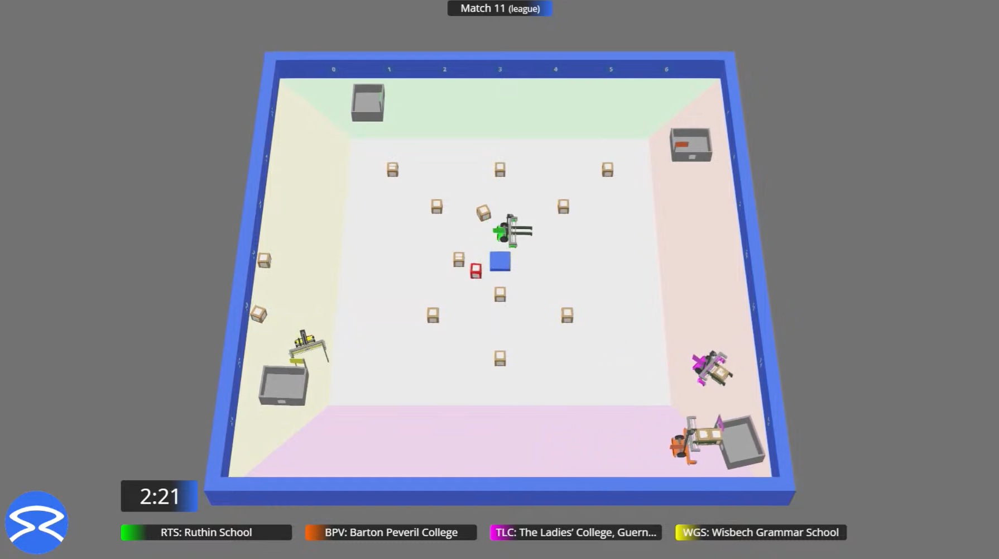

Student Robotics
A sixth-form extracurricular project for the 2023/24 Student Robotics competition.

Systems thinking beyond games
This project involved building and programming a robot for a competitive environment where software had to respond to a physical world. The team placed third in the virtual competition, with a less successful result in the physical competition.
Why it belongs here
Robotics strengthened the same habits I bring to game systems: decomposing a moving problem, making behaviour observable, and designing code that can adapt when the real result differs from the plan.

